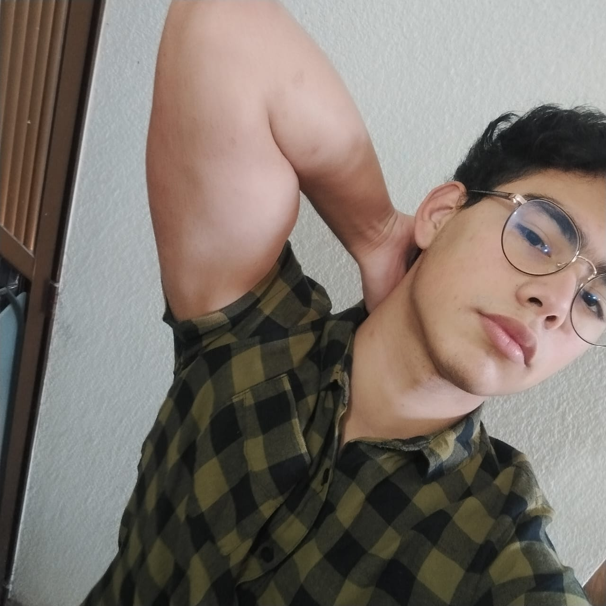

|  |
FRANCISCO DANIEL VIVAS GODINEZ |
Programador aficionado con grandes ambiciones, me gusta aprender y siempre estar aculizado de las nuevas tecnologias, me gusta armar y desarmar equipos de computo. Entre mis hobbies se encuentran los video juegos, entrenar en el gym, los comics son el tipo de arte que mas drisfruto, en la lectura disfruto mas del genero de ciencia ficción.